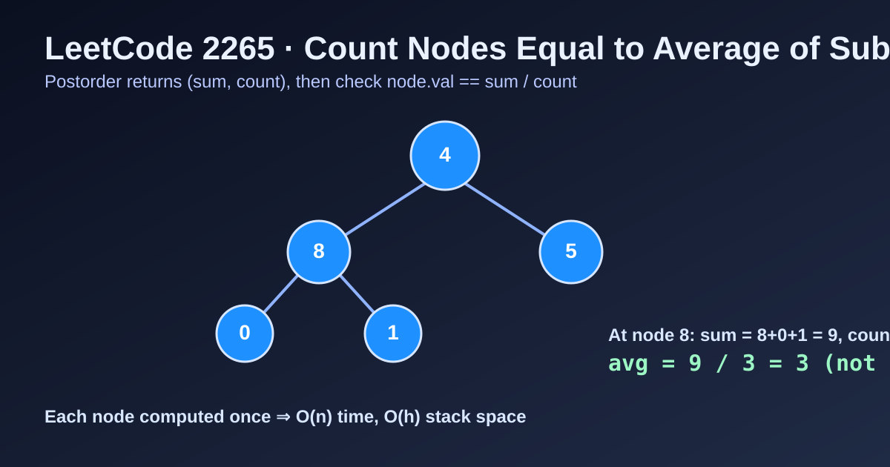

LeetCode 2265: Count Nodes Equal to Average of Subtree (Postorder Sum+Count Aggregation)
LeetCode 2265Binary TreeDFSPostorderToday we solve LeetCode 2265 - Count Nodes Equal to Average of Subtree.
Source: https://leetcode.com/problems/count-nodes-equal-to-average-of-subtree/

English
Problem Summary
Given a binary tree, for each node compute the average value of all nodes in its subtree (including itself), using integer division rounded down, and count how many nodes have value equal to that average.
Key Insight
Each node needs its subtree sum and count. That is exactly a postorder pattern: compute left and right first, merge to current, then check node.val == sum / count.
Brute Force and Limitations
For every node, doing a separate DFS to compute subtree sum/count leads to repeated traversals and O(n^2) in skewed trees. Postorder aggregates once for the whole tree in linear time.
Optimal Algorithm Steps
1) Define DFS returning (sum, count) for each subtree.
2) Recurse left and right to obtain (ls, lc), (rs, rc).
3) Compute sum = ls + rs + node.val, count = lc + rc + 1.
4) If node.val == sum / count (integer division), increment answer.
5) Return (sum, count) upward.
Complexity Analysis
Time: O(n).
Space: O(h) recursion stack, where h is tree height.
Common Pitfalls
- Forgetting to include current node in sum/count.
- Using floating average instead of required floor integer division.
- Doing preorder checks before subtree info is available.
- Returning only sum but not count from DFS.
Reference Implementations (Java / Go / C++ / Python / JavaScript)
class Solution {
private int ans = 0;
public int averageOfSubtree(TreeNode root) {
dfs(root);
return ans;
}
private int[] dfs(TreeNode node) {
if (node == null) return new int[]{0, 0};
int[] left = dfs(node.left);
int[] right = dfs(node.right);
int sum = left[0] + right[0] + node.val;
int count = left[1] + right[1] + 1;
if (node.val == sum / count) ans++;
return new int[]{sum, count};
}
}func averageOfSubtree(root *TreeNode) int {
ans := 0
var dfs func(*TreeNode) (int, int)
dfs = func(node *TreeNode) (int, int) {
if node == nil {
return 0, 0
}
ls, lc := dfs(node.Left)
rs, rc := dfs(node.Right)
sum := ls + rs + node.Val
cnt := lc + rc + 1
if node.Val == sum/cnt {
ans++
}
return sum, cnt
}
dfs(root)
return ans
}class Solution {
public:
int ans = 0;
pair<int,int> dfs(TreeNode* node) {
if (!node) return {0, 0};
auto [ls, lc] = dfs(node->left);
auto [rs, rc] = dfs(node->right);
int sum = ls + rs + node->val;
int cnt = lc + rc + 1;
if (node->val == sum / cnt) ans++;
return {sum, cnt};
}
int averageOfSubtree(TreeNode* root) {
dfs(root);
return ans;
}
};class Solution:
def averageOfSubtree(self, root: Optional[TreeNode]) -> int:
ans = 0
def dfs(node):
nonlocal ans
if not node:
return 0, 0
ls, lc = dfs(node.left)
rs, rc = dfs(node.right)
total = ls + rs + node.val
cnt = lc + rc + 1
if node.val == total // cnt:
ans += 1
return total, cnt
dfs(root)
return ansvar averageOfSubtree = function(root) {
let ans = 0;
const dfs = (node) => {
if (!node) return [0, 0];
const [ls, lc] = dfs(node.left);
const [rs, rc] = dfs(node.right);
const sum = ls + rs + node.val;
const cnt = lc + rc + 1;
if (node.val === Math.floor(sum / cnt)) ans++;
return [sum, cnt];
};
dfs(root);
return ans;
};中文
题目概述
给定一棵二叉树。对每个节点，计算其子树（包含自身）所有节点值的平均数（向下取整的整数除法），统计有多少节点的值恰好等于该平均值。
核心思路
每个节点都依赖子树的 sum 与 count，天然是后序遍历：先拿到左右子树聚合结果，再合并当前节点并做判断。
暴力解法与不足
若对每个节点都单独 DFS 一次求子树和/节点数，会反复遍历，最坏可达 O(n^2)。后序一次遍历即可得到全部答案。
最优算法步骤
1）定义 DFS 返回当前子树的 (sum, count)。
2）递归左右子树拿到 (ls, lc)、(rs, rc)。
3）合并得到 sum = ls + rs + node.val，count = lc + rc + 1。
4）若 node.val == sum / count（整数除法），答案加一。
5）将 (sum, count) 返回给父节点。
复杂度分析
时间复杂度：O(n)。
空间复杂度：O(h)（递归栈深度，h 为树高）。
常见陷阱
- 合并时漏掉当前节点的值或数量。
- 用浮点平均而不是题目要求的整数向下取整。
- 在前序位置判断，导致左右子树信息尚未就绪。
- DFS 只返回 sum，不返回 count。
多语言参考实现（Java / Go / C++ / Python / JavaScript）
class Solution {
private int ans = 0;
public int averageOfSubtree(TreeNode root) {
dfs(root);
return ans;
}
private int[] dfs(TreeNode node) {
if (node == null) return new int[]{0, 0};
int[] left = dfs(node.left);
int[] right = dfs(node.right);
int sum = left[0] + right[0] + node.val;
int count = left[1] + right[1] + 1;
if (node.val == sum / count) ans++;
return new int[]{sum, count};
}
}func averageOfSubtree(root *TreeNode) int {
ans := 0
var dfs func(*TreeNode) (int, int)
dfs = func(node *TreeNode) (int, int) {
if node == nil {
return 0, 0
}
ls, lc := dfs(node.Left)
rs, rc := dfs(node.Right)
sum := ls + rs + node.Val
cnt := lc + rc + 1
if node.Val == sum/cnt {
ans++
}
return sum, cnt
}
dfs(root)
return ans
}class Solution {
public:
int ans = 0;
pair<int,int> dfs(TreeNode* node) {
if (!node) return {0, 0};
auto [ls, lc] = dfs(node->left);
auto [rs, rc] = dfs(node->right);
int sum = ls + rs + node->val;
int cnt = lc + rc + 1;
if (node->val == sum / cnt) ans++;
return {sum, cnt};
}
int averageOfSubtree(TreeNode* root) {
dfs(root);
return ans;
}
};class Solution:
def averageOfSubtree(self, root: Optional[TreeNode]) -> int:
ans = 0
def dfs(node):
nonlocal ans
if not node:
return 0, 0
ls, lc = dfs(node.left)
rs, rc = dfs(node.right)
total = ls + rs + node.val
cnt = lc + rc + 1
if node.val == total // cnt:
ans += 1
return total, cnt
dfs(root)
return ansvar averageOfSubtree = function(root) {
let ans = 0;
const dfs = (node) => {
if (!node) return [0, 0];
const [ls, lc] = dfs(node.left);
const [rs, rc] = dfs(node.right);
const sum = ls + rs + node.val;
const cnt = lc + rc + 1;
if (node.val === Math.floor(sum / cnt)) ans++;
return [sum, cnt];
};
dfs(root);
return ans;
};
Comments